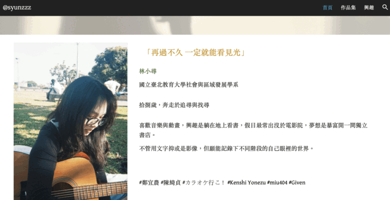
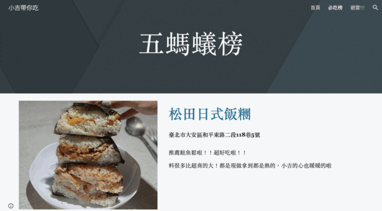
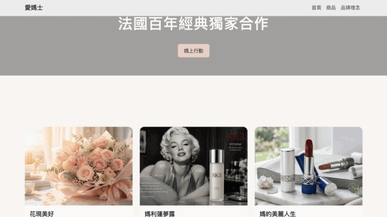

工具： Google Sites
我的角色：
網站架構規劃、內容撰寫
為什麼做：
這是我第一次嘗試製作個人網站，希望透過網站整理自己的興趣與生活紀錄，也練習如何將資訊以較有條理的方式呈現給他人。
學到了什麼：
在作品完成後，我發現自己在「數位敘事與觀點詮釋」部分較弱。原本將文字內容收合於圖片下方，導致重要資訊不容易被讀者注意，因此後續調整為直接呈現內容。這讓我理解到網站設計不只是版面美觀，更需要考慮讀者閱讀的便利性與資訊傳達的清晰度。

工具： Google Sites
我的角色：
資訊整理、內容撰寫、版面設計
為什麼做：
在校園美食生存指南的製作中，我們希望從學生的角度出發，整理實用的校園周邊店家資訊。我們發現學生選擇餐廳時最在意價格與實用資訊，因此決定以「ㄅ到ㄦ評分表」整理店家特色，希望讓讀者能快速理解各店家的特色與推薦程度，提高網站的辨識度與趣味性。
學到了什麼：
這次活動讓我體會到團隊合作與資訊架構的重要性。在有限的時間內，小組成員必須快速達成共識並完成分工。我發現當團隊人數較多時，適時放下自己的想法並傾聽他人意見，反而能提升整體效率。此外，如果有更多時間，我希望補充更完整的店家資訊與介紹內容，讓網站兼具實用性與閱讀性。

工具： HTML、CSS、Bootstrap、Netlify
我的角色：
網站架設、版面調整
為什麼做：
本次作品以母親節送禮情境為主題，希望透過花束商品頁的設計，練習如何結合商品資訊與情感敘事。網站不只是展示商品，而是思考如何從媽媽與送禮者的角度出發，呈現送禮背後的情感價值。
學到了什麼：
在網站製作過程中，我學習到商品頁不只是圖片與價格的排列，更需要透過文案建立情感連結與購買動機。同時也實際操作 HTML、CSS 與網站發布流程。回顧作品後，我認為商品描述仍有進一步加強的空間，若能增加更完整的花束故事與使用情境，將能提升網站的說服力與整體完成度。